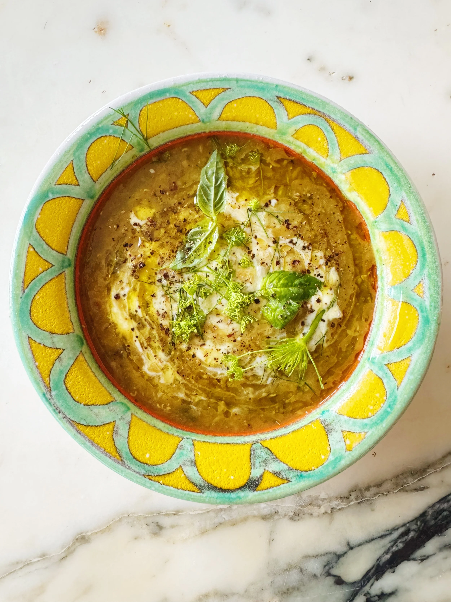

Description
The bulk of this soup here is zucchini (two whole pounds, which could be anywhere from two large to five small
zucchini…the mystery of summer squash…), but the thickening power comes from the addition of either lentils
or rice, cooked beyond individual grains to a soft tender mush, giving you a creamy soup while allowing you
to skip the blender. Good for babies and adults seeking comfort. All of the seasonings are flexible (and
should be adjusted depending on who you’re cooking this for), but I will say this is lightly spiced to
begin with, as zucchini is delicately flavored (an understatement), so feel free to increase if you’re wanting
“more”. All to say, take what you like and leave what you don’t, though I do recommend leaving the onion,
zucchini, lentils (or rice) and broth. Without which you might not have any soup at all.
Ingredients
- 2 tablespoons coconut oil or olive oil
- 1 small yellow or red onion, finely chopped
- Kosher salt, freshly ground pepper
- 1 teaspoon cumin seed or fennel seed (or half and half)
- ¼ teaspoon ground turmeric
- Pinch crushed red pepper flakes, optional
- 2 pounds zucchini or yellow summer squash, grated on a box grater
- ¾ cup yellow or red lentils or jasmine or basmati rice
- 1 lemon, halved for squeezing over
- Yogurt, herbs and/or prune puree (if you’re feeding a baby), optional
Steps
- Heat coconut oil in a large pot over medium heat. Add onion and season with salt and pepper. Cook,
stirring occasionally until totally softened and starting to fry lightly at the edges, 10–12 minutes.
Add cumin, turmeric and crushed red pepper flakes, if using. Cook a minute or two to toast and bloom the
spices in the fat.
- Add zucchini and season again with salt and pepper. Cook, stirring occasionally, until the zucchini has
softened completely and shrunk by nearly half (this is the liquid evaporating and the flavors
concentrating). Add the lentils or rice and 6 cups of broth (start there, you can always add more).
Bring to a simmer and reduce heat to medium low.
- Cook, stirring occasionally, until the lentils (or rice) are fully cooked (25-35 minutes), perhaps
overcooked (a good thing here) and soup is nicely thickened to your liking. Perhaps that's brothier,
or more puree-like– either which way, you can always simmer longer or add more broth to suit your needs.
- To serve, season again with salt and pepper, swirl in some yogurt if you want, top with herbs if you have,
and a squeeze of lemon (a must).
Home